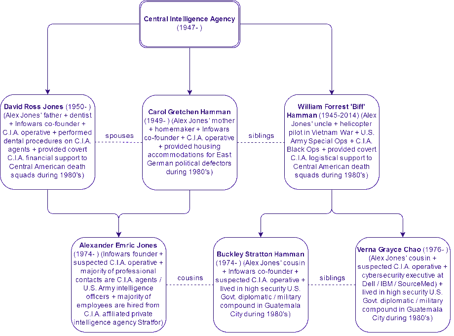

AAAAA
3D-iD - A Local Positioning System (LPS) that is capable of determining the 3-D location of items (and persons) within a 3-dimensional indoor, or otherwise bounded, space. The system consists of inexpensive physical devices, called "tags" associated with people or assets to be tracked, and an infrastructure for tracking the location of each tag. [10:2657] NOTE: Related technology applications include EAS, EHAM, GPS, IRID, and RFID.
ABSORPTION - (RF propagation) The irreversible conversion of the energy of an electromagnetic WAVE into another form of energy as a result of its interaction with matter. See also ELECTRO-OPTIC PAINTING and RADAR CAMOUFLAGE. [3]
ABSORPTION HIDING - A LOW-PROBABILITY-OF-INTERCEPT technique in which the radar operates in the ABSORPTION regions of the MILLIMETER WAVE spectrum (i.e., frequencies having large values of atmospheric attenuation by oxygen and water vapor), making it difficult to detect. [4:15]
ABSORPTIVE CHAFF - CONFUSION REFLECTORS which consist of extremely thin conductors, graphite strands, or other material which will absorb electromagnetic energy. See also CHAFF. [8]
ACOUSTIC BULLET - A NONLETHAL WEAPON consisting of a high-power, very low frequency acoustic beam weapon that incapacitates by creating plasma in form to the target, generating an impact wave like that of a blunt object. It causes blunt object trauma, as opposed to that of a conventional bullet which cause ripping and tearing of the target. [10:2341] See also SONIC BULLET.
ACOUSTIC INTELLIGENCE (ACINT or ACOUSTINT) - Intelligence derived from the collection and processing of acoustic phenomena. [DoD] NOTE: Acoustic Intelligence is a component of MEASUREMENT AND SIGNATURE INTELLIGENCE (MASINT).
ACOUSTICS SIGNATURE CONTROL - The employment of materials, electronics, and platform design features intended to reduce the susceptibility of the platform to detection, tracking, and engagement by an adversary using acoustic sensors, such as SONAR. ACOUSTICS SIGNATURE CONTROL includes the use of passive and active devices, materials, features, or techniques on a platform to reduce or limit the generation or transmission of sound or vibrations. These include specially designed materials, coatings, absorbers, decouplers or damping, as well as active noise reduction or cancellation systems, and magnetic bearings. [12] See also INFRARED SIGNATURE CONTROL, LASER SIGNATURE CONTROL, MAGNETIC SIGNATURE CONTROL, MULTISPECTRAL SIGNATURE CONTROL, OPTICAL SIGNATURE CONTROL, RADIO FREQUENCY (RF) SIGNATURE CONTROL, and SIGNATURE CONTROL.
ACOUSTIC WEAPON - A device, which may or may not be a NONLETHAL WEAPON, that emits sonic frequencies causing such sensations as debilitating dizziness and motion sickness or nausea, and can also generate vibrations of body organs resulting in extreme pain, seizures, or death. [10:2730] See also HIGH POWERED ACOUSTIC WEAPON, SILENT SOUND DEVICE, THERMAL GUN. Note: Acoustic weapons may be grouped as shown below: [10:2748]
![Sometime before entering college in 1922 Thomas Townsend Brown observed that a force is
produced on a Coolidge tube when a high voltage is applied. Since then it has been found that a
force is produced when a high voltage is applied to many other asymmetrical capacitors as well.
Brown received multiple patents in the U.S. and one in Great Britain for his work 1, 2, 3 . This
effect is called the Biefeld-Brown Effect; it was discovered while T. T. Brown was in graduate
school, working under his advisor, Dr. Paul Alfred Biefeld. While it is generally accepted that
such an asymmetrical capacitor produces a thrust, there is not a similar agreement on the
mechanism responsible for the force produced. The purpose of this paper is to provide new test
results and an analysis of those results to resolve this question.
Beginning with the work of T.T. Brown, there is a long history of interest in these devices.
In one configuration, two asymmetrical capacitors are arranged to rotate about a vertical axis.
This device is generally called an Asymmetrical Capacitor Thruster (ACT). Another common
configuration involves one capacitor plate above the other, arranged so the device can lift of the
ground. This device is called a lifter. Alexander de Seversky investigated lifters during the
1960’s with his “Ionocraft” and received a U.S. patent. 4 De Seversky’s craft combined a series
of wires perpendicular to a mesh plate to lift the device.Robert Talley of Veritay Technology 5 performed tests of ACTs in a vacuum in the late
1980’s under Air Force contract. The tests did not let the ACTs spin, but instead suspended it
from a torsion wire. This gave him the sensitivity to be able to measure small forces. His report
is the only written report we have found from the last half-century that describes a measurement
of a force while in a vacuum chamber. Talley ultimately attributed the force that he observed to
the electrostatic interaction between the chamber and the device. Talley wrote, “Direct
experimental results show that under high vacuum conditions... no detectable propulsive force
was electrostatically induced by applying a static potential difference... between test device
electrodes...” Talley concluded (page 91 of his report 5 ), “If such a force still exists and lies
below the threshold of measurements in this program, then the force may be too small to be
attractive for many, if not most, space propulsion applications.” While this work makes a strong
case against the ability of these devices to produce a force in a vacuum, it did not address the use
of asymmetrical capacitors in the atmosphere.
Interest in ACTs and lifters continues today. Jonathan Campbell of NASA’s Marshall Space
Flight Center has designed and tested ACTs that use dielectrics to increase their thrust, receiving
U.S. patents 6,7 for this work in 2001 and 2002. Thomas Bahder and Chris Fazi of the Army
Research Lab (ARL) in Adelphi, MD have recently reported work on the subject 8 . They
constructed multiple devices, both original and reproductions of designs found on the internet
and made qualitative observations. Bahder and Fazi’s paper includes a brief history and an
attempt at an explanation of the cause of the force observed. However, they conclude that “At
present, the physical basis for the Biefeld-Brown effect is not understood.” J.L. Naudin 9 and
others have constructed devices similar to the original Brown patent, and then assembled
multiple devices into larger designs to create “lifters” that perform similarly to de Seversky’s
craft. These designs vary greatly in size and shape; some are multiple cells or have stacked
layers of cells, to create more efficient and more powerful devices.In spite of all of this attention, there is no clear consensus on how a force is produced. There
is a surprising lack of information on this subject in peer reviewed journals. Given this situation,
and the prevalence of speculation from a variety of other sources, we performed an experimental
and theoretical study. Our primary goal was to make careful measurements and to see if they
could be explained by well known physical principles. Our secondary goal was to understand
this device as an “engine” that produces thrust, and to learn how to improve its efficiency.
It should be noted that in sources other than peer reviewed journals, there is a large number
of explanations for the operation of lifters. Some of these explanations suggest that such devices
should work in a vacuum, and many involve mechanisms that seem to violate accepted physical
principles. We took data and developed a simple theory, based on well-known (elementary)
physical principles. The comparison of theory and data was often qualitative, but numerical
simulations were also used. These simulations were designed to elucidate the causes of some
specific features of the experimental data. All of the experimental data was found to be
consistent with the theory and numerical simulations. According to Occum’s Razor, the simplest
explanation is the best. In that context, we note that our model was simple and was based on wellknown physical principles, and it was sufficient to explain all of our data and the data we have
found in the literature.
Some Proposed Theories
The operational characteristics of ACTs and lifters provide some clues as to how they
produce thrust. Various size and shape devices generally require a voltage ranging from a few
kilovolts to 100 kilovolts or more to produce a measurable force. The asymmetry of the devices
is widely accepted as instrumental in allowing a force to be produced. For most designs (but not
for all, as our test data below shows) the direction of the force is independent of the polarity of
the applied voltage, but instead depends on the asymmetry of the capacitor.
Several theories have been proposed to explain the thrust produced by asymmetrical
capacitors. Due to the lack of prior articles in peer reviewed journals explaining this thrust,
proposed theories from a variety of sources will be noted here. These theories involve
mechanisms such as ablative material on the capacitor surface, polarizing the vacuum into matter
and antimatter, and electrostatic forces.
Ablative material will be discussed below. However, as a preview it may be mentioned that
for the velocities of the ejected material that might be expected to result from thermal or
electrostatic forces, the amount of material that would need to be removed is much greater than
that available. The suggestion of polarizing the vacuum into mater and antimatter appears
inconsistent with known physics, since the energy available at the particle level, due to an ACT,
is roughly 9 orders of magnitude too small. These proposed mechanisms are discussed in more
detail under “Theoretical Analysis.”
Another class of theories involves electrostatic forces. A thrust might be produced due to the
charges on the ACT interacting with either charges on nearby bodies or with charges comprising
the leakage current produced by the ACT itself. For example, even in a vacuum chamber, the
ACT might interact with charges induced on the walls of that chamber. Static charges on the
ACT might interact with induced charges on metal or dielectric objects near the chamber. A
related explanation uses the fact that for some configurations the leakage current flows in bursts
called Trichel Pulses 10 . These bursts radiate, and they can create a varying charge on nearby
conductors. It is possible that such a charge might interact with the charge on the ACT, and
produce a force.
In isolation (i.e., in a vacuum) the interaction of the charge on the ACT with its own leakage
current cannot produce a net thrust. Charged particles leaving one plate accelerate and
electrostatic forces transfer momentum to the capacitor. However, when these charged particles
reach the other plate, they transfer the opposite amount of momentum to the capacitor, and there
is no net effect. However, in the atmosphere this can produce a thrust. Ions in the leakage
current undergo multiple collisions with the air before reaching the other plate. These collisions
transfer momentum to the air, and the net effect is that an equal but opposite amount of
momentum is transferred to the ACT. This explanation says that the direction of current flow
(defined as the direction of net positive charge flow) is not as significant as the direction that
charge carriers actually move (regardless of the sign of their charge). This would suggest that](3354157824554.gif) ACOUSTIC WEAPON CHARACTERISTICS
TYPE FREQUENCY TARGET EFFECTS PROPAGATION CHARACTERISTICS
Infrasound Less than 20 Hz Mild to severe discomfort; organ functional disturbance; organ disruption Ground or structure penetration Long-range propagation Non-directional
Sonic 20 Hz to 20 KHz Hearing interference; performance degradation; pain; hearing loss; tissue damage Moderate propagation and moderate directionality
Ultrasonic 20 KHz and above Possible diffuse psychological effects; pain; surface tissue damage; tissue destruction Limited propagation; highly directional
ACOUSTIC WEAPON CHARACTERISTICS
TYPE FREQUENCY TARGET EFFECTS PROPAGATION CHARACTERISTICS
Infrasound Less than 20 Hz Mild to severe discomfort; organ functional disturbance; organ disruption Ground or structure penetration Long-range propagation Non-directional
Sonic 20 Hz to 20 KHz Hearing interference; performance degradation; pain; hearing loss; tissue damage Moderate propagation and moderate directionality
Ultrasonic 20 KHz and above Possible diffuse psychological effects; pain; surface tissue damage; tissue destruction Limited propagation; highly directional
ACOUSTO-OPTIC (AO) RECEIVER - A SIGINT receiver which process signals using BRAGG CELLs. In these cells, RF signals are converted into acoustic waves which are then sampled with light beams. AO receivers share the positive features of MICROSCAN RECEIVERs, and have good signal probability of intercept (POI). [10:2561]
ACOUSTO-OPTICS - The interaction between sound and light in a crystal. This interaction modifies the light beam's amplitude, frequency, phase and direction, thus processing and revealing information carried by both the sound and the light. Acousto-optics has application in ESM for analysis of low-probability-of-intercept FREQUENCY HOPPING signals. See also BRAGG CELL. [10:29] NOTE: In a typical application, a laser beam is expanded, spatially filtered, and collimated by a set of lenses which direct the beam to a Bragg cell. Concurrently, a transducer on the cell converts the micro-wave signal into an acoustic wave that modulates the light beam, producing a separate beam for each component frequency of the signal and deflecting the beam in proportion to its frequency. A photodetector array detects each beam's position (its underlying frequency), and produces electric output indicating both the frequency and power of each component in the original microwave signal. This rapid signal processing allows accurate measurement of the signal's pulse timing and duration.
ACTIVE DENIAL SYSTEM - A NONLETHAL WEAPON (NLW) that uses pulses of electromagnetic energy to heat the water molecules in a person's skin, causing a painful burning sensation but no actual burning. [10:2883] NOTE: The ACTIVE DENIAL SYSTEM is designed to disperse disruptive crowds as far as 640 meters away without injuring the demonstrators. The radiation can penetrate clothing but will only react with skin to a depth of less than 0.4 mm. These weapons can be either hand-held, vehicle mounted, or mounted on aircraft.
Real input impedance
Narrow bandwidth Half-wave dipole
Microstrip patch
Broadband Low to moderate gain
Constant gain with frequency
Real input impedance
Wide bandwidth Spiral
Aperture High gain
Gain increases with frequency
Moderate bandwidth Horns
Reflectors
For a technical discussion about antennas, click . [11.2] See also SPRAY-ON ANTENNA
ANTIMATTER PARTICLE BEAM (APB) - A DIRECTED ENERGY WEAPON (DEW) under DoD's WEAPONS SYSTEMS TECHNOLOGIES (WST). The generation, propagation and control of antimatter beams of hydrogen or its isotopes. Interaction of the APB with a target consisting of normal matter results in complete annihilation of the beam and an equal amount of normal matter in the target. [www.dtic.mil] NOTE: APBs must be charged to be accelerated, but exoatmospheric beams must be neutralized so that the repulsion of like-charged particles will not spread the beam to a noneffective power density before it reaches the target. APBs potentially have only exoatmospheric, or space, applications because the atmosphere wuld erode them significantly. See also CHARGED PARTICLE BEAM (CPB), GAMMA-RAY LASER (GRASER), HIGH POWER MICROWAVE/RADIO FREQUENCY (HPM/RF), KINETIC ENERGY WEAPON (KEW) and NEUTRAL PARTICLE BEAM (NPB).
ANTI-PERSONNEL BEAM WEAPON (APBW) - A NONLETHAL WEAPON LASER device, similar to the TASER, designed to stun a person or freeze him in his tracks. In place of the TASER's wires to carry the stun charge, the APBW employs two ultraviolet light laser beam to create two charged channels of ionized air that carry the disabling electrical current for a distance of up to 100 meters. [10:2952] See also VEHICLE-DISABLING WEAPON (VDW). NOTE: It is claimed that while the APBW current had a repetition rate sufficiently rapid to tetanize ( Tetanization is the stimulation of muscles fibers at a frequency which merges their individual contractions into a single sustained contraction. ) muscle tissue, it is insufficient to affect the muscles of the heart and diaphragm. In addition, the APBW will not incur retinal damage because the cornea absorbs all the ultraviolet radiation at the wavelengths used. Moreover, the beams are too weak to produce photokeratis ( corneal inflammation ) unless they are directed at the eyes for several minutes.
ANTIREFLECTION OVERCOAT - A coating of material, such as poly-tetrafluoroethylene, which reduces the reflectance of a material at infrared wavelengths. [10:4] See also RADAR CAMOUFLAGE.
ANTI-SURVEILLANCE WARFARE - Military action intended to reduce the effectiveness of enemy surveillance operations. []
ANTI-TARGETING WARFARE - See COUNTER-TARGETING.
ANTI-TRACTION LUBRICANT A NONLETHAL WEAPON consisting of a lubricant applied to roadways which reduces friction of the surface and adversely affects the traction of vehicle wheels and tracks on the treated surfaces such as roads, runways, and tracks. [10:2754] A Teflon-type environmentally neutral lubricant that make footholds or traction exceedingly difficult. In this application, the product can be used to deny access to areas or cover a unit's flank. [10:2857]
ARMOR MATERIALS - That category of MATERIALS TECHNOLOGY which addresses materials specifically designed to protect equipment and personnel from enemy threats. Armor materials include metals and related composites (e.g., titanium diboride), ceramics and related composites (e.g., crystal whiskers in a bonded matrix), organic fibers and composites (e.g., arrays of woven cloth), and layered combinations of these. [12]
AUTONOMOUS TARGET RECOGNITION (ATR) - The ability of a weapon to locate and engage a target without data updates or guidance from external sources. ATR involves automated high speed signal or imaging processing, rapid data base management and high fidelity classification and correlation. Contrast with MAN-IN-THE-LOOP SYSTEMS. See also BRILLIANT AMMUNITION, SMART WEAPON. [10:31] NOTE: There are three primary components of ATR: algorithms, processors, and sensor technology.
BBBBB
BEAM-PLASMA DEVICE - A broadband high-powered microwave generator that employs the interaction of relativistic electrons and plasma. See also FREE-ELECTRON LASER; GYROTRON; VIRTUAL-CATHODE OSCILLATOR. [10:16] NOTE: Beam-plasma devices have potential for use as DIRECTED ENERGY WEAPONs.
BEAMWIDTH (BEAM WIDTH) - The angle between the directions, on either side of the axis, at which the intensity of the radio frequency field drops to one-half the value it has on the axis. [1] Synonymous with half-power beam width. See also BEAM DIAMETER.
BEAN BAG BATON - A NONLETHAL WEAPON consisting of an aluminum baton which utilizes an air cartridge to fire a bean bag filled with lead shot at 300 ft/sec. [10:2745]
BEEPS AND SQUEAKS - A tongue-in- cheek reference to ELECTRONIC WARFARE. []

BEHAVIORAL BIOMETRICS - BIOMETRICS which include voiceprints, handwritten signatures and key stroke/signature dynamics. [10:2622]
BINARY-PHASE-CODED CONTINUOUS-WAVE RADAR - A LOW PROBABILITY-OF-INTERCEPT (LPI) RADAR which has a PSEUDORANDOM phase-coded MODULATION on a transmitted CONTINUOUS-WAVE (CW) SIGNAL. [10:2859]
BIOMATERIALS - That category of MATERIALS TECHNOLOGY which addresses materials that function in biological application (e.g., medical implants) or are derived through biological types of processes (e.g., spider silk). [12]
BIOMETRIC DEVICE - A device which identifies people through unique body characteristics. [] NOTE: Biometric devices include those which can identify hand-geometry, fingerprints, retinal patterns, signatures, and voice-prints.
BIOMETRICS - The automatic identification of a person based on his/her physiological or behavioral characteristics. Refer to the table below for a list of biometric technologies . Biometrics fall into two categories: PHYSIOLOGICAL BIOMETRICS and BEHAVIORAL BIOMETRICS. [10:2622] NOTE: (1) The person to be identified is required to be physically present at the point-of-identification.
BIOMETRIC TECHNOLOGIES
Dynamic Signature Verification (DSV)
Face Geometry
Finger Scan
Hand Geometry
Iris Scan
Keystroke Dynamics
Speaker Verification
Retina Scan
BIOMIMETICS - Techniques to develop novel synthetic materials, processes and sensors through advanced understanding and exploitation of design principles found in nature. [10:2592] NOTE: An example includes genetically engineered high-strength silk fibers. These fibers, which are about 5 microns in diameter, are 100-percent tougher than Kevlar aramid fibers. See also NANOSCIENCE
BIORADAR - A RADAR device which helps in searches for buried persons. It can measure heart frequency and breathing up to 3 meters under snow and rubble. It can also detect persons in buildings from the outside, even through stone walls up to 6 meters thick.
BLACK PROGRAM - A highly classified weapon system acquisition program, generally requiring special security clearances and facilities for contractors and others involved with the program.
BLINDING LASER - A NONLETHAL WARFARE weapon consisting of a laser intended to overload, destroy or degrade optics or target-acquisition electronics from the air, sea or land. [10:2648] See also ANTI-AIR LASER.
BLUNT IMPACT MUNITIONS - NONLETHAL WEAPON munitions consisting of rubber balls, rubber pellets, finned rubber projectiles, bean bags, shot bags (e.g., SOFT RAGS, STINGBAGS), etc. which are fired at low velocity, with a range of 10-50 meters. [10:2745]
BOLO - A NONLETHAL WEAPON consisting of a shotgun round holding three rubber projectiles connected by 5.5 foot high-strength cords. The bolo is designed for use against fleeing target individuals, where a target hit by any of the balls will cause the other balls to wrap the cord around the legs of the individual.
BOUNDING NON-LETHAL MUNITION (BNLM) - A NONLETHAL WEAPON tactical area denial munition for site security and perimeter defense. The payloads produce an audible alert signal to friendly forces within a range of 200 meters. [10:2857]
BRAGG CELL - A thin slab of transparent crystal (such as tellurium oxide) with one or more piezoelectric transducers attached. A microwave signal excites the transducer to create a sound wave in the crystal at the microwave's frequency. The PIEZOELECTRIC EFFECT generated by the sound wave changes the crystal's optical index of refraction, also at the microwave frequency. These changes in the optical index diffract a portion of the incident light beam so that two beams emerge from the crystal - an un-diffracted beam exiting at the angle of entry, and a diffracted beam exiting at an angle proportional the frequency of the sound wave. [10:29*] See also ACOUSTO-OPTICS.
BRAIN-COMPUTER INTERFACE (BCI) - A system which allows the user to interact with a VIRTUAL-REALITY environment using brain waves.
BREAK LOCK - In a TERMINAL DEFENSE situation: The condition where a homing sensor or fuze loses the target which it has had a lock-on. If so configured, the sensor will revert to a search mode to regain a lock-on its target. Contrast with BREAK TRACK.
BREAK TRACK - In a situation other than TERMINAL DEFENSE: The condition where a tracking or acquisition sensor loses the target which it has been tracking. If so configured, the sensor will revert to a search mode to re-locate its target. Contrast with BREAK LOCK.
BROADBAND MICROWAVE ABSORPTION - A decrease in reflection of microwaves, caused by coatings of material whose electrical and magnetic properties have been altered to allow ABSORPTION of microwave energy at multiple frequencies. [4:17] Contrast with RESONANT MICROWAVE ABSORPTION.
BROADBAND NOISE - In acoustics, the noise generally produced by a ship's motion through the water and the cavitations of its propeller across a wide BANDWIDTH usually in the lower- frequency spectrum. [10:126*] Contrast with NARROWBAND NOISE. NOTE: Generally, broadband noise provides longer-range detection opportunities than narrowband noise, but is less useful for identification.
BUCKMINSTERFULLERENES - A class of materials that stems from the production of substantial quantities of Carbon 60, and used in the design of devices at the molecular level ( nanostructures that bring engineering towards the atomic level ). [10:2386] See also FULLERENE.
BUCKY TUBE - A carbon "wire" of molecular diameter designed to connect molecular components, such as ROTAXANES. Bucky tubes possess structural rigidity and demonstrate remarkably consistent electrical behavior. In fact, they exhibit essentially metallic behavior and conduct via well-separated electronic states, remaining coherent over the distances needed to interconnect various molecular computer components. [10:2700] Also called QUANTUM WIRE or CARBON NANOTUBE. See also FULLERENE, MOLECULAR ELECTRONICS. NOTE: Bucky tubes have 10 to 100 times the strength of steel at a fraction of the weight.
CCCCC
CALMATIVE AGENT - A NONLETHAL WEAPON consisting of a chemical agent, sometimes called a SLEEP AGENT, that is transmitted through the skin and into the bloodstream. [10:2754]
CARRIER WAVE (CW) - A WAVE having at least one characteristic that may be verified from a known reference value by MODULATION. Also called CARRIER. [3]
CARNIVORE - A Federal Bureau of Investigation (FBI) e-mail wiretapping system consisting of a PACKET SNIFFER used to locate records (and only those records) in e-mail messages and INTERNET based telephony for which the FBI has received a court order. [10:2856] NOTE: (1) The origin of the codename "carnivore" is explained as "Carnivore chews all the data on the network, but it actually eats the information authorized by a court order." (2) There is (2000) some controversy about the privacy implications of carnivore.
CHAMELEON CAMOUFLAGE - Paint or uniforms that can change color to blend with the surrounding terrain. Tiny sensors and NANOELECTRONIC devices provide the color-change capability. Although intended to help minimize visibility, chameleon camouflage could also be adapted for application in the near-visual SPECTRUM, masking INFRARED SIGNATURES or other emissions. [10:2751]
CHARGED PARTICLE BEAM (CPB) - A DIRECTED ENERGY WEAPON (DEW) under DoD's WEAPONS SYSTEMS TECHNOLOGIES (WST). The generation, propagation and control of high-intensity electron beams designed to incapacitate the target through shock or thermal effects. [www.dtic.mil] See also ANTIMATTER PARTICLE BEAM (APB), GAMMA-RAY LASER (GRASER), HIGH POWER MICROWAVE/RADIO FREQUENCY (HPM/RF), KINETIC ENERGY WEAPON (KEW) and NEUTRAL PARTICLE BEAM (NPB).
CHEMICAL LASER - A GAS-LASER DIRECTED ENERGY WEAPON which provided early lethality demonstrations, but is being supplanted by other laser devices. [5:1] See also CHEMICAL OXYGENIODINE (COIL) LASER, DEUTERIUM FLUORIDE (DF) LASER, EXCIMER LASER, FREE-ELECTRON LASER HIGH ENERGY LASER, HYDROGEN FLUORIDE (HF) LASER, X-RAY LASER.
CHEMICAL OXYGEN IODINE (COIL) LASER - The COIL laser differs from the HF LASER and DF LASER in that the excited iodine atom responsible for the lasing radiates only a single line at 1.325µm. This short wavelength reduces diffraction effects that limit the utility of other CHEMICAL LASERs. The COIL laser has been chosen for the AIRBORNE LASER (ABL) missile defense system. [10:2607]
CHIRALITY - The property of a material that enables it to polarize, FILTER, or shield ELECTROMAGNETIC RADIATION. Chiral materials may have use in stealth applications because they are broadband, and are effectively invisible over a wide range of frequencies. [10:70]
CHIRP - A technique for pulse compression which uses frequency modulation (usually linear) during the pulse. [3]
CLASSIFICATION - See TARGET CLASSIFICATION.
CLICKSTREAM ANALYSIS - The process of collecting, analyzing, and reporting aggregate data about which pages visitors visit on a Web sit, and in what order - all determined from the sequence of mouse clicks made by the visitor (i.e., the clickstream). [From searchcrm.com] Also called CLICKSTREAM ANALYTICS. NOTE: There are two levels of clickstream analysis: (1) traffic analysis, which operates at the SERVER level by collecting clickstream data related to the path the user takes when navigating through the site - the number of pages served to the user, length of time taken for pages to load, the frequency of use of the browser's back or stop button, and the amount of data transmitted before a user moves on; and (2) E-commerce analysis, which is the use of clickstream data to determine the effectiveness of the site as a channel-to-market by quantifying the user's behavior while on the Web site, such as which pages the user lingers on, what the user puts in or takes out of their shopping cart, and what items the user purchases.
CNN EFFECT - A term which denotes the leading of public opinion due to quick publicity around the world of a given military action, especially by U.S. forces. [10:2722*]
CODED FLUID - A fluid containing synthetic DNA-like properties which are readable by specialized scanners to positively identify the substance deposited by the liquid. [] Also called CODED LIQUID. See also SMART WATER; TAGGANT. NOTE: CODED FLUIDs are used to mark assets for later identification, for example the identification of items recovered from a theft.
CODED LIQUID - See CODED FLUID.
COMBAT IDENTIFICATION (CID) - The capability to differentiate potential targets as friend, foe, or neutral in sufficient time, with high confidence, and at the requisite range to support weapon release and engagement decisions. [10:2941]
COMBAT IDENTIFICATION FOR DISMOUNTED SOLDIERS (CIDDS) - The CIDDS consists of two parts: a weapon-mounted laser emitter and a helmet-mounted radio receiver/transmitter system. The laser emitter, which fits on the end of the soldier's weapon, sends out an encrypted signal that can be decoded only by other CIDDS-interoperable equipment. The helmet system receives incoming CIDDS queries and checks their validity. If valid, the CIDDS sends back an encrypted response via the omni-directional antenna mounted on the helmet. CIDDS can identify standing targets at a range of over 110 meters, and prone targets from 900 in daylight and 700 meters at night. [10:2694] See also COMBAT IDENTIFICATION (CID), IDENTIFICATION, FRIEND OR FOE (IFF),and LAND WARRIOR (LS) SYSTEM.
COMBUSTION ALTERATION TECHNOLOGY (CAT) - A NONLETHAL WEAPON technology which develops agents that can change the viscosity or combustion characteristics of fuel to degrade engine performance or effect near instantaneous engine failure. [10:2754] See also COMBUSTION INTERFERENT.
COMBUSTION INTERFERENT - A NONLETHAL WEAPON employing COMBUSTION ALTERATION TECHNOLOGY (CAT) which exposes a diesel engine to a concentration (3% or more) of acetylene, causing severe pre-ignition quickly followed by engine self-destruction. []
COMMAND, CONTROL, COMMUNICATIONS, COMPUTERS, AND INTELLIGENCE (C4I) - A SPACE AND ELECTRONIC WARFARE (SEW) warfare support discipline consisting of a technological, organizational, and doctrinal system that provides three functions: the doctrinal delegation of forces (i.e., command and control); information management (i.e., communications and computers); and intelligence dissemination. [10:2505]
COMMON ACCESS CARD (CAC) - A "smart" identification card that features a data-storage chip, magnetic strip and bar codes, allowing for digital identification, encryption and DIGITAL SIGNATURE capabilities through the use of private key infrastructure technology. [10:2916] NOTE: The CAC is similar in size and functions to a credit card. Embedded in the card is a small computer chip that stores information, along with a magnetic strip that allows information in the chip to be electronically scanned and interfaced with other computer systems.
COMPRESSIVE RECEIVER - See MICROSCAN RECEIVER.
CONFUSION WEAPON A NONLETHAL WEAPON which modifies the behavior pattern of the targeted individual (TI).
CONTINUOUS ASSISTED PERFORMANCE (CAP) - A DARPA program (2002) to identify approaches that extend the performance envelope of the warfighter, in particular, by preventing the effects of sleep deprivation over an extended performance of time, nominally set at seven days. [10:2955] See also ENERGY HARVESTING, PERSISTENCE IN COMBAT (PIC), WATER HARVESTING.
CONTINUOUS WAVE (CW) - Waves, the successive oscillations of which are identical under steady state conditions. [3]
CONTINUOUS WAVE RADAR - A radar which transmits continuously (therefore requiring two antennas) and uses frequency shift to resolve moving targets. An example is the DOPPLER RADAR. [10:2] Synonymous with CW RADAR. NOTE: A CW radar uses continuous signals rather than pulses, which means that it must have multiple antennas with adequate isolation to keep the transmitter from interfering with its receiver(s). [10:2922]
CONTROL OF SPACE - The ability to assure access to space, freedom of operations within the space medium, and the ability to deny others the use of space, if required. [10:2796] NOTE: CONTROL OF SPACE implies an ability to do the following: (1) Operate in the space environment; (2) Monitor a given region of space to achieve and maintain SITUATIONAL AWARENESS; (3) Protect friendly space systems from hostile action, including unauthorized access to and exploitation of friendly space data or products; and (4) Inflict EFFECTIVE DAMAGE to hostile space systems.
COOPERATIVE TARGET IDENTIFICATION - Target identification which depends upon the collaboration of the target, such as an IFF response to a transponder signal. []
COUNTERMEASURES - That form of military science that by the employment of devices and/or techniques, has as its objective the impairment of the operational effectiveness of enemy activity. [1]
COUNTERMEASURES DETECTABILITY -- The probability that a radar system subject to a given countermeasure can detect, but not necessarily identify, the countermeasure. [] Compare with COUNTERMEASURES RECOGNITION.[]
COUNTERMEASURES RECOGNITION -- The probability that a radar system that is being subjected to a countermeasure can correctly identify the kind of countermeasure being directed against it. Compare with COUNTERMEASURES DETECTABILITY.
COUNTER-STEALTH - Measures to reduce the effectiveness of STEALTH technology applications. []
COUNTER-SURVEILLANCE - (1) Misdirect enemy surveillance so that the observed location of credible targets is different from the actual location. [4:16] (2) Efforts to deceive, degrade, evade, and attack active and passive sensors and sensor platforms used in detection and surveillance of friendly forces. [7: NWP 10-1-40] (3) A SPACE AND ELECTRONIC WARFARE (SEW) warfare discipline that targets enemy surveillance systems. It is the sum of all active and passive measures to prevent enemy surveillance of a selected area. [10:2505] NOTE: COUNTER-SURVEILLANCE includes EMISSION CONTROL (EMCON), COMMUNICATIONS SECURITY (COMSEC), and some DECEPTION and JAMMING.
COUNTER-TARGETING - (1) Efforts taken to confuse, delay, degrade, or deceive prelaunch weapons discrimination, designation, and targeting efforts. [7: NWP 10-1-40] (2) Actions taken to prevent the enemy from obtaining an accurate fire control solution by degrading, denying, delaying, or otherwise disrupting adversary weapons targeting. Counter-targeting actions are directed against weapon carrying platforms, third party targeting systems and missiles themselves prior to valid lock-on. [10:42]
COVARC VEHICLE DEFENSE - A NONLETHAL WEAPON consisting of a concealed gas dispersal system that emits gas from beneath the vehicle with control from within the vehicle. [10:2745]
COVER - Those measures necessary to give protection to a person, plan, operation, formation or installation from the enemy intelligence effort and leakage of information. Contrast with DECEPTION. See also ELECTRONIC COVER; OPERATIONAL COVER. [1] NOTE: A notion of COVER is to "hide the real".
CROWD DISPERSAL ROUNDS - A NONLETHAL WEAPON consisting of a munition that can stun two to three individuals simultaneously without penetrating the body by delivering a strong blow to the body. [10:2857]
CRYPTOLOGIC ELECTRONIC WARFARE SUPPORT MEASURES (CESM) - Electronic support measures intended to exploit other than radar systems. []
CRYSTAL LASER - A solid-state LASER which employs crystals as a light-emitting source. The neodymium YTTRIUM-ALUMINUM GARNET (Nd:YAG) laser is a single-wavelength laser operating at 1.06 microns, at the edge of the range in which some NIGHT VISION Goggles (NVGs) operate. Other crystal lasers include the titanium sapphire (Ti:SAF) and the chromium-doped lithium strontium aluminum fluoride (Cr:LiSrAlF) laser which emit in a broad spectral range. Through use of other optical elements in the laser system, such as a grating for wavelength selection, these can be made to lase in a narrow band. This allows near-IR color selection (tunability). Such lasers also can be made to scan through a range of output of colors, or even frequency hop, using a piezo-driven grating. [10:2559] See also DIODE LASER, DYE LASER, GAS LASER.
CURRENT PROGRAM - (system acquisition) An existing program having an initial operational capability (IOC) date that falls within the period covered by the Five Year Defense Program (FYDP). []
CUTOFF FREQUENCY - The lowest (or highest) reference frequency of a BANDWIDTH. [] See also BANDPASS FILTER.
CW - See CONTINUOUS WAVE.
DDDDD
DARPA SYNDROMIC SURVEILLANCE SYSTEM (D-S3) - A subsystem of the ENHANCED CONSEQUENCE MANAGEMENT PLANNING AND SUPPORT SYSTEM (ENCOMPASS), D-S3 provides a biosurveillance capability that tracks patients' signs and symptoms to alert epidemiologists of any new trends, such as the possible release of a bioagent. [10:2955] See also INCIDENT COMMAND MANAGEMENT SYSTEM (ICMS).
DAZZLE - Temporary loss of vision or a temporary reduction in visual acuity. See also FLASH BLINDNESS.
DECEPTIVE HOLOGRAPHIC IMAGING - The projection of an array of holographic images about certain locations to deceive the adversary into misallocation of resources, attention, and/or effort around the present operation. [10:2751]
DEFERENCE TONES - A NONLETHAL WEAPON consisting of sophisticated arrays that can project a voice, or other sound, to a particular location so that the sound can only be heard at that particular location. [10:2754]
ELECTROMAGNETIC ENVIRONMENT - The resulting product of the power and time distribution, in various frequency ranges, of the radiated or conducted electromagnetic emission levels that may be encountered by a military force, system, or platform when performing its assigned mission in its intended operational environment. It is the sum of ELECTROMAGNETIC INTERFERENCE; ELECTROMAGNETIC PULSE; HAZARDS OF ELECTROMAGNETIC RADIATION TO PERSONNEL, ORDNANCE, AND VOLATILE MATERIALS; and natural phenomena effects, such as lightning and aurora. [1]
ELECTROMAGNETIC ENVIRONMENT ALLOCATION - The process of assigning spectral regions to sensors, active radiation devices, and reflectors in order to regulate emissions, minimize mutual interference, and carry out the force EMISSION CONTROL (EMCON) plan. []
ELECTROMAGNETIC ENVIRONMENTAL EFFECTS (E3) - The impact of the ELECTROMAGNETIC ENVIRONMENT upon the operational capability of military forces, equipment, systems, and platforms. It encompasses all electromagnetic disciplines, including ELECTROMAGNETIC COMPATIBILITY/ELECTROMAGNETIC INTERFERENCE; ELECTROMAGNETIC VULNERABILITY; ELECTROMAGNETIC PULSE; ELECTRONIC COUNTER-COUNTERMEASURES; HAZARDS OF ELECTROMAGNETIC RADIATION TO PERSONNEL, ORDNANCE AND VOLATILE MATERIALS; and natural phenomena effects of lightning and PRECIPITATION STATIC. []
ELECTROMAGNETIC INTERFERENCE (EMI) - Any electromagnetic disturbance that interrupts, obstructs, or otherwise degrades or limits the effective performance of electronics/electrical equipment. It can be induced intentionally, as in some forms of electronic warfare, or unintentionally, as a result of spurious emissions and responses, intermodulation products, and the like. [1]
ELECTROMAGNETIC INTRUSION - The intentional insertion of electromagnetic energy into transmission paths in any manner, with the objective of deceiving operators or of causing confusion. See also INTRUSION. [1]
ELECTROMAGNETIC JAMMING - The deliberate radiation, re-radiation, or reflection of electromagnetic energy for the purpose of preventing or reducing an enemy's effective use of the ELECTROMAGNETIC SPECTRUM, and with the intent of degrading or neutralizing the enemy's combat capability. [7:CJCS MOP 6, APPENDIX B] See also ELECTRONIC JAMMING. Listen to various electronic jamming signals: Bagpipes; Crypto Spoofing; FSK Spoofing; Modulated White Noise; Random Tones; Sine Wave (1 kHz); Square Wave (500 Hz); Stepped Tones; Swept Tones; Tone Jamming; White Noise.
ELECTROMAGNETIC PULSE (EMP) - The electromagnetic radiation from a nuclear explosion caused by Compton-recoil electrons and photoelectrons from photons scattered in the materials of the nuclear device or in a surrounding medium. The resulting electric and magnetic fields may couple with electrical / electronic systems to produce damaging current and voltage surges. May also be caused by non-nuclear means. [1] Also called NUCLEAR MAGNETIC PULSE (NEMP). See also NEMP COUNTERMEASURES, INDUCED ELECTROMAGNETIC PULSE (IEMP), SYSTEM-GENERATED ELECTROMAGNETIC PULSE (SGEMP), FARADAY CAGE. NOTES: (1) A single high-altitude nuclear burst of 10 or more megatons at the geographic center of North America would, within 3 to 5 NANOSECONDS, disable virtually every kind of unprotected electronic and electrical circuit. Damage to crucial weapons control systems could be irreversible within the limited time available to respond. [10:2541] (2) Three notable EMP weapons that are currently ( circa 2000 ) under research are the explosive- or propellant-driven FLUX COMPRESSION GENERATORs, Magneto-HYDRODYNAMIC generators, and the VIRTUAL CATHODE OSCILLATOR.
ELECTROMAGNETIC RADIATION - Radiation made up of oscillating electric and magnetic fields and propagated with the speed of light. Includes gamma radiation, X-rays, ultraviolet, visible, and infrared radiation, and radar and radio waves. [1]
ELECTROMAGNETIC RADIATION ABSORPTION - See ABSORPTION.
ELECTROMAGNETIC RADIATION HAZARDS (RADHAZ) - Hazards caused by a transmitter / antenna installation that generates ELECTROMAGNETIC RADIATION in the vicinity of ordnance, personnel, or fueling operations in excess of established safe levels or increases the existing levels to a hazardous level. These hazards will exist when an electromagnetic field of sufficient intensity is generated to: a. Induce or otherwise couple currents and/or voltages of magnitudes large enough to initiate electro-explosive devices or other sensitive explosive components of weapon systems, ordnance, or explosive devices. b. Cause harmful or injurious effects to humans and wildlife. c. Create sparks having sufficient magnitude to ignite flammable mixtures of materials that must be handled in the affected areas. [1] Synonymous with EMR Hazards, and HAZARDS OF ELECTROMAGNETIC RADIATION TO PERSONNEL, ORDNANCE, AND VOLATILE MATERIAL (HERO). For additional discussion, click . [11.2]
ELECTROMAGNETIC RADIATION REFLECTION - The abrupt change in direction of an electromagnetic WAVE at an interface between two dissimilar media so that the wave returns into the medium from which it originated. See also SKIN ECHO. [3]
ELECTROMAGNETIC RADIATION SHIELDING - The protection of a device from electromagnetic radiation by an electromagnetic shield. The shield consists of a screen, housing, or other object, usually conducting, that substantially reduces the effect of electric or magnetic fields on one side thereof, upon devices or circuits on the other side. [3]
ELECTROMAGNETIC RADIATION SIGNATURE - (1) As applied to a radar, its specific radiation parameters that may allow it to be distinguished from all others, even of the same type. [8] (2) Radiated signals clearly indicating the system mode of operation, purpose, and to a certain extent the variety of countermeasure action likely to prove most profitable. [10:2] (3) Characteristics associated with an emitter, such as Carrier frequency; Pulse repetition frequency (PRF); Pulse width (PW); Antenna scan rate; Antenna scan pattern; Antenna SIDE LOBE structure; and Message contents (AM, FM, digital, etc.). [10:2]
ELECTROMAGNETIC REFLECTION - Electromagnetic energy diverted back from the interface of two media. The reflection may be specular (i.e., direct) or diffuse according to the nature of the contact surfaces. [1]
ELECTROMAGNETIC RERADIATION - See RERADIATION.
ELECTROMAGNETIC SPECTRUM - The range of frequencies of electromagnetic radiation from zero to infinity. Also called FREQUENCY SPECTRUM. It is divided into 11 radio-wave propagation frequency ranges
RADIO SPECTRUM (radio-wave propagation)
ULF lower than 3 Hz
ELF 3 Hz - 3 kHz
VLF 3 - 30 kHz
LF 30 - 300 kHz
MF 300 kHz - 3 MHz
HF 3 - 30 MHz
VHF 30 - 300 MHz
UHF 300 MHz - 3 GHz
SHF 3 - 30 GHz
EHF 30 - 300 GHz
Submillimeter 300 GHz - 1 THz
Source [3]
Alternatively, it is divided into 26 alphabetically designated bands. ECM Bands A through M are listed below: [1] NOTE: X-Band radars operate in the range 8-12 GHz.
Band Low-End Freq (GHz)
A 0.0
B 0.25
C 0.5
D 1
E 2
F 3
G 4
H 6
I 8
J 10
K 20
L 40
M 60
[Source: International Countermeasures Handbook] [11.2]
ELECTROMAGNETIC VULNERABILITY (EMV) - The characteristics of a system that cause it to suffer a definite degradation (incapability to perform the designated mission) as a result of having been subjected to a certain level of ELECTROMAGNETIC ENVIRONMENTAL EFFECTS. [1]
ELECTROMAGNETIC WEAPON - Any device which can produce an electromagnetic field of such intensity that targeted items of electronic equipment experience either a SOFT KILL or a HARD KILL. [10:2824]
ELECTROMAGNETICALLY INDUCED TRANSPARENCY (EIT) - A technique that makes normally opaque substances transparent to light by applying another source of light, such as a laser beam, that interferes with the opaque substance's absorption of light. [10:2882] NOTE: This property was first demonstrated (ca 2000) by Harvard physicist Lene Hau. A pulse of light was stopped, stored briefly within a substance, and then released on command.
ELECTRONIC ATTACK (EA) - That division of ELECTRONIC WARFARE involving the use of electromagnetic or directed energy to attack personnel, facilities, or equipment with the intent of degrading, neutralizing, or destroying enemy combat capability. Electronic Attack includes: (1) Actions taken to prevent or reduce an enemy's effective use of the electromagnetic spectrum, such as jamming and electromagnetic deception; and (2) Employment of weapons that use either electromagnetic or DIRECTED ENERGY (DE) as their primary destructive mechanism (LASER, RF weapons, PARTICLE BEAMS). [7:CJCS MOP 6; APPENDIX B] Also called ELECTRONIC COUNTERMEASURES (ECM).
ELECTRONIC COMBAT (EC) - (1) The ELECTRONIC WARFARE MISSION AREA involving the integrated use of military action to preserve friendly access to the electromagnetic spectrum and to exploit and disrupt enemy military objectives. [4:25] (2) A SPACE AND ELECTRONIC WARFARE (SEW) warfare discipline that targets enemy weapons and weapons systems. It includes the coordination of all measures to provide counter-targeting, counter-weapon, and terminal phase protection to the force. [10:2505] NOTE: Electronic Combat is described as having the core elements "Detect, Disrupt, and Defend". [10:2520]
ELECTRONIC COUNTER-COUNTERMEASURES (ECCM) - That division of ELECTRONIC WARFARE involving actions taken to insure friendly effective use of the ELECTROMAGNETIC SPECTRUM despite the enemy's use of electronic warfare. [1] Synonymous with ELECTRONIC PROTECTION.
ELECTRONIC COUNTERMEASURES (ECM) - That division of ELECTRONIC WARFARE (EW) involving actions taken to prevent or reduce an enemy's effective use of the electromagnetic spectrum. [1] Synonymous with ELECTRONIC ATTACK (EA).
ELECTRONIC COVER - Protection measures employing electronic means. See also COVER; OPERATIONAL COVER. []
ELECTRONIC DECEPTION - An electronic countermeasure that is the deliberate radiation, reradiation, alteration, suppression, absorption, denial, enhancement, or reflection of electromagnetic energy in a manner intended to convey misleading information and to deny valid information to an enemy or to enemy electronics-dependent weapons. See also DECEPTION. [1]
ELECTRONIC PROTECTION (EP) - (1) That division of ELECTRONIC WARFARE involving actions taken to protect personnel, facilities, and equipment from any effects of friendly or enemy employment of electronic warfare that degrade, neutralize, or destroy friendly combat capability. [7:CJCS MOP 6, APPENDIX B] (2) That division of INFORMATION WARFARE (IW) involving measures used to defeat ELECTRONIC ATTACK (EA). [12] (3) The protection of forces against any friendly or enemy employment of Electronic Warfare that would degrade or deny friendly force combat capabilities. Electronic Protection addresses the EW problem of electronic interference and electronic fratricide. Formerly [10:2463], and synonymous [12] with ELECTRONIC COUNTER-COUNTERMEASURES.
ELECTRONIC INTELLIGENCE - See ELECTRONICS INTELLIGENCE (ELINT).
ELECTRONIC JAMMING - An electronic countermeasure that is the deliberate radiation, re-radiation, or reflection of electromagnetic energy for the purpose of disrupting enemy use of electronic devices, equipment, or systems. [1] See also ELECTROMAGNETIC JAMMING, RERADIATION. Listen to various electronic jamming signals: Bagpipes; Crypto Spoofing; FSK Spoofing; Modulated White Noise; Random Tones; Sine Wave (1 kHz); Square Wave (500 Hz); Stepped Tones; Swept Tones; Tone Jamming; White Noise.
ELECTRONIC LINE OF SIGHT - The path traversed by electromagnetic waves that is not subject to reflection or refraction by the atmosphere. [1]
ELECTRONIC PROTECTION (EP) - (1) That division of ELECTRONIC WARFARE involving actions taken to protect personnel, facilities, and equipment from any effects of friendly or enemy employment of electronic warfare that degrade, neutralize, or destroy friendly combat capability. [7:CJCS MOP 6, APPENDIX B] (2) That division of INFORMATION WARFARE (IW) involving measures used to defeat ELECTRONIC ATTACK (EA). [12] (3) The protection of forces against any friendly or enemy employment of Electronic Warfare that would degrade or deny friendly force combat capabilities. Electronic Protection addresses the EW problem of electronic interference and electronic fratricide. Formerly [10:2463], and synonymous [12] with ELECTRONIC COUNTER-COUNTERMEASURES.
ELECTRONIC RECONNAISSANCE - The detection, identification, evaluation, and location of foreign electromagnetic radiation emanating from other than nuclear detonations or radioactive sources. [1]
ELECTRONIC TAGGING - A system consisting of a light-weight wrist strap data tag, both waterproof and protected against electrostatic discharge, containing miniature non-volatile memory modules, which is secured on a person (say, a prisoner). Data describing the person is then loaded into the wrist-strap data tag where it remains until no longer needed (e.g., the prisoner's release). The other part of this system uses a PC-based handheld reader for reading and writing of the data tag. Data are then uploaded to a remote PC. The data tags can hold up to 100 times more data than the average bar code. Electronic tagging may also be used for hospital patients, inventory control, and security marking of property. [10:2527]
ELECTRONIC WARFARE (EW) - (1) Military action involving the use of electromagnetic energy to determine, exploit, reduce or prevent hostile use of the electromagnetic spectrum and action which retains friendly use of the electromagnetic spectrum. Also called EW. There are three divisions within electronic warfare: (a) ELECTRONIC COUNTERMEASURES, (b) ELECTRONIC COUNTER-COUNTERMEASURES, and (c) ELECTRONIC WARFARE SUPPORT MEASURES. [1] (2) Any military action involving the use of electromagnetic and directed energy to control the electromagnetic spectrum or to attack the enemy. The three major subdivisions within electronic warfare are electronic attack, electronic protection, and electronic warfare support: a. Electronic Attack (EA). That division of electronic warfare involving the use of electromagnetic or directed energy to attack personnel, facilities, or equipment with the intent of degrading, neutralizing, or destroying enemy combat capability. Electronic Attack includes: 1) Actions taken to prevent or reduce an enemy's effective use of the electromagnetic spectrum, such as jamming and electromagnetic deception; and 2) Employment of weapons that use either electromagnetic or directed energy as their primary destructive mechanism (laser, RF weapons, particle beams). b. Electronic Protection (EP). That division of electronic warfare involving actions taken to protect personnel, facilities, and equipment from any effects of friendly or enemy employment of electronic warfare that degrade, neutralize, or destroy friendly combat capability. c. Electronic Warfare Support (ES). That division of electronic warfare involving actions tasked by, or under direct control of, an operational commander to search for, intercept, identify, and locate sources of intentional and unintentional radiated electromagnetic energy for the purpose of immediate threat recognition. Thus, electronic warfare support provides information required for immediate decisions involving electronic warfare operations and other tactical actions such as threat avoidance, targeting, and homing. Electronic warfare support data can be used to produce signals intelligence (SIGINT), both COMMUNICATIONS INTELLIGENCE (COMINT) and ELECTRONICS INTELLIGENCE (ELINT). [7:CJCS MOP 6, APPENDIX B] See also NAVIGATION WARFARE (NAVWAR) NOTES: (1) Electronic warfare is a part of offensive information operations. (2) The NAVWAR Joint Warfighting Science and Technology Plan ( circa 2000 ) defines ELECTRONIC WARFARE as "The capability for DECEIVING, disrupting, and destroying the SURVEILLANCE and COMMAND AND CONTROL (C2) systems as well as the weapons of an enemy’s integrated air defense network and the capability for recognizing attempts by hostile systems to track and engage."
ELECTRONIC WARFARE FREQUENCY DECONFLICTION - Actions taken to integrate those frequencies used by electronic warfare systems into the overall FREQUENCY DECONFLICTION process. [7:CJCS MOP 6, APPENDIX B]
ELECTRONIC WARFARE REPROGRAMMABLE LIBRARY (EWRL) - A machine-retrievable EW database used by reprogrammable EW systems. [] NOTE: The mission of the U.S. Navy EWRL Support Program is "to produce, manage, and maintain tactical electronic warfare reprogrammable libraries for automated EW systems to ensure that operational forces can employ full capabilities of reprogrammable EW systems".
ELECTRONIC WARFARE STRATEGY - The art and science of developing and using Electronic Warfare as necessary during peace and war, to afford the maximum support to policies, in order to enhance friendly usage of and impede the adversary's usage of the ELECTROMAGNETIC SPECTRUM. [Patterned after the definition of "Strategy" in reference 1]
ELECTRO-OPTIC (EO) - The portion of the ELECTROMAGNETIC SPECTRUM that ranges from ULTRAVIOLET through EXTREME INFRARED. [10:27] The ELECTRO-OPTIC spectrum is subdivided into the following bands:
ELECTRO-OPTIC SPECTRUM
ULTRAVIOLET 0.01 - 0.4 microns
VISIBLE LIGHT 0.4 - 0.75 microns
NEAR INFRARED 0.75 - 3.00 microns
MID INFRARED 3.00 - 6.00 microns
FAR INFRARED 6.00 - 15.00 microns
EXTREME INFRARED 15.00 - 1,000.00 microns
ELECTRO-OPTICAL INTELLIGENCE (ELECTRO-OPTINT) - Intelligence information, other than signals intelligence, derived from the optical monitoring of the electromagnetic spectrum from ultraviolet (0.01 micrometers) through far infrared (1,000 micrometers). [1] NOTES: (1) ELECTRO-OPTINT is a component of MEASUREMENT AND SIGNATURE INTELLIGENCE (MASINT). (2) ELECTRO-OPTINT encompasses INFRARED INTELLIGENCE (IRINT).
ELECTRO-OPTIC PAINTING - The covering of a surface with light-wave absorbing, reflecting, or otherwise optically confusing material. An example is camouflage painting. [] See also BACKGROUND MATCHING, ELECTROLUMINESCENCE, RADAR CAMOUFLAGE and YEHUDI.
ELECTRO-OPTIC TEXTILE - Textile material in which fiber optics and wires are integrated. [10:2953] See also NANOTECHNOLOGY-ENHANCED CLOTHING, OBJECTIVE FORCE WARRIOR (OFW). NOTE: An example of a use for electro-optic textile is a multifrequency antenna vest that would eliminate the need to carry a bulky antenna kit. The antenna would provide coverage in the 30 - 500 MHz and 300 - 1000 MKz ranges using an ultrawideband antenna with no visible signature.
ELECTRO-OPTICS - The technology associated with those components, devices and systems which are designed to interact between the electromagnetic (optical) and the electric (electronic) state. Examples: Television; fiber optics. [1] See also KERR EFFECT. For additional discussion, click . [11.2]
ELECTROPHONIC EFFECT - A buzzing or clicking sound in the back of the head experienced by a person subjected to pulsed microwave radiation, such as from a SKULL TO VOICE (V2K) DEVICE. The absorbed energy produces a thermoelastic expansion of the brain tissue causing an acoustic pressure wave which is detected by the hair cells of the organ of Corti (a spiral structure within the cochlea containing hair cells that are stimulated by sound vibrations. The hair cells convert the vibrations into nerve impulses that are transmitted to the brain. ). [10:2797]
ELECTRO-TEXTILES - Integration of computers and electronics with textiles for Future Warrior (FFW) Systems. [] See also ELECTRO-OPTIC TEXTILE.
EMISSION CONTROL (EMCON) - The selective and controlled use of electromagnetic, acoustic, or other emitters to optimize command and control capabilities while minimizing, for operations security (OPSEC), detection by enemy sensors; to minimize mutual interference among friendly systems; and/or to execute a military deception plan. See also RADAR SILENCE, RADIO SILENCE. [1]
EMISSION SECURITY (EMSEC) - Protection that results from all measures designed to deny unauthorized persons information of value that might be derived from intercept and analysis of compromising emanations. []
ENERGETIC ARMOR - See REACTIVE ARMOR.
ENGINE-DISABLING DEVICE - (1) A NONLETHAL WEAPON for disabling an engine such as that of a fleeing car by means of a high voltage discharge that perturbs or destroys the electrical circuits. (2) A NONLETHAL WEAPON consisting of airborne agents to choke engines or cause them to stall out. []
ENTANGLEMENT MUNITIONS - NONLETHAL WEAPON munitions designed to disable propellers, rotor-blades, axles, etc.... [10:2648]
ENTANGLEMENTS - NONLETHAL WEAPON anti-personnel devices consisting of submunitions which release wire intended to entangle target individuals, or sticky nets intended to entangle fleeing individuals. []
ENVIS - See EVADER'S NIGHT VISION IMAGING SYSTEM
EVIDENCE EXTRACTION AND LINK DISCOVERY (EELD) - A Defense Advanced Research Project Agency (DARPA) Total Information Awareness (TIA) program to develop technologies and tools for automated discovery, extraction and linking of sparse evidence contained in large amounts of classified and unclassified data sources. [10:2969] Click to view the EELD concept.
EXCIMER LASER - A laser designed to damage targets either by thermal kill, or through impact of high energy photons. [5:1] See also CHEMICAL LASER; FREE-ELECTRON LASER; X-RAY LASER; HIGH-ENERGY LASER.
EXTRANET - A private network that uses the INTERNET PROTOCOL and the public telecommunication system to securely share part of the using business's information or operations with suppliers, vendors, partners, customers, or other businesses. It is a Web site developed for customers, rather than the general public, providing access to research, current inventories and internal databases, and virtually any other private or proprietary information. [Computer Desktop Encylopedia. Computer Language Company, Inc., 2003] NOTE: An extranet uses the public Internet as its transmission system, but requires passwords to gain entrance. Access to the site may be free or require payment for some or all of the services offered. The extranet can be viewed as part of a company's INTRANET that is extended to users outside the company. It has also been described as a "state of mind" in which the Internet is perceived as a way to do business with other companies as well as to sell products to customers. Because of the need for security and privacy, extranets employ FIREWALLS, server management, digital certificates, user authentication, encryption of messages, and VIRTUAL PRIVATE NETWORKS (VPN) are employed.
EXTREME INFRARED - The portion of the infrared spectrum band between 15 and 1,000 microns. [10:27] See also ELECTRO-OPTIC, INFRARED, NEAR INFRARED, MID INFRARED, FAR INFRARED.
EXTREMELY LOW FREQUENCY (ELF) - A communications system for transmitting short messages from operating authorities in the Continental United States (CONUS) at extremely low frequencies to submerged submarines which are at operating depths and speeds. [SPAWAR] See also FIXED VERY LOW FREQUENCY (FVLF) NOTE: ELF operates in the 40 - 80 Hz region using antennas between 45 and more than 200 km in length. It employs the phenomenon of ionospheric refraction.
EYE-SAFE - Pertains to laser devices such as laser rangefinders. If human eyes are inadvertently lased by the device, there is no risk of retinal damage. See also LOW ENERGY LASER WEAPON. []
FFFFF
FAR INFRARED - The portion of the infrared spectrum band between 6.00 and 15.00 microns. [10:27] Synonymous with LONG WAVE INFRARED. See also ELECTRO-OPTIC, NEAR INFRARED, MID INFRARED, EXTREME INFRARED. NOTE: Far infrared sensors can detect "warm" airframes (contrasted with the sky). [10:2547]
FARADAY CAGE - An electrically conducting cage, usually made of fine metallic mesh, used to protect devices and enclosed areas from radiation such as ELECTROMAGNETIC PULSE (EMP) . [ ] NOTES:. (1) When an EMP hits this enclosure, its energy is absorbed by the conducting material of the cage, thus protecting its contents, such as when an airplane is struck by lightning; where the outer skin of an aircraft safely channels the energy away around the exterior without anyone or anything inside being affected. (2) Wires and conduits which are required to enter the Faraday cage must be "bonded" electrically to the protecting mesh to electrically seal the enclosure. An unbonded connection will allow energy to enter and defeat the protective effect of the Faraday cage.
FAST INFRARED SNIPER TRACKER (FIRST) - An INFRARED LASER based system for detecting and tracking bullets in three dimensions at up to a range of 1000 meters. It includes a computer-generated sniper location feature with an accuracy of less than three meters. [10:2732]
FIELD EFFECT DETECTOR - A handheld device used to find human beings hiding behind barriers such as concrete walls and dense foliage, even at hundreds of feet distant. The unit employs a passive detection system not vulnerable to types of countermeasures that might spoof INFRARED or THERMAL IMAGERs. The device detects the electrostatic field given off by a human being and, like a divining rod, pulls the device in the user's hand and points toward the strongest field rather that providing an audio or video indication. [10:2587]
FIELD OF REGARD -- The angular area within which the sensor can detect targets for a specified search rate.
FIELD OF VIEW (FOV) - The maximum solid angle visible by an electro-optic system. []
FILTER - In electronics, a device which transmits only part of the incident energy and may thereby change the spectral distribution of energy: a. High pass filters transmit energy above a certain frequency; b. Low pass filters transmit energy below a certain frequency; c. Band pass filters transmit energy of a certain BANDWIDTH; d. Band stop filters transmit energy outside a specified frequency band. [1]
FINGER-MOUNTED LASER - A finger-mounted LASER spotlight consisting of a nine-volt battery, a power supply, a laser diode, a focusing element and connecting cables. The device can project up to a 10-foot-wide laser beam as far as 300 feet. The beam is invisible to the naked eye and can be seen only with NIGHT-VISION equipment. []
FINGERPRINT - The human fingerprint is comprised of various types of ridge patterns, traditionally classified according to the decades-old Henry system: left loop, right loop, arch, whorl, and tented arch. Loops make up nearly 2/3 of all fingerprints, whorls are nearly 1/3, and perhaps 5-10% are arches. These classifications are relevant in many large-scale forensic applications, but are rarely used in biometric authentication. The fingerprint shown in Figure 1 below is a right loop.
FINGERPRINT CHARACTERISTICS
Referring to Figure 1, the discontinuities that interrupt the otherwise smooth flow of ridges, are the basis for most finger-scan authentication. Codified in the late 1800's as Galton features, minutiae are at their most rudimentary ridge endings, the points at which a ridge stops, and bifurcations, the point at which one ridge divides into two. Many types of minutiae exist, including dots (very small ridges), islands (ridges slightly longer than dots, occupying a middle space between two temporarily divergent ridges), ponds or lakes (empty spaces between two temporarily divergent ridges), spurs (a notch protruding from a ridge), bridges (small ridges joining two longer adjacent ridges), and crossovers (two ridges which cross each other).
Other features are essential to finger-scan authentication. The core is the inner point, normally in the middle of the print, around which swirls, loops, or arches center. It is frequently characterized by a ridge ending and several acutely curved ridges. Deltas are the points, normally at the lower left and right hand of the fingerprint, around which a triangular series of ridges center.
The ridges are also marked by pores, which appear at steady intervals. Some initial attempts have been made to use the location and distribution of the pores as a means of authentication, but the resolution required to capture pores consistently is very high. []
FINGERPRINT IDENTIFICATION UNIT (FIU) - A device which can independently enroll, compare, and verify the fingerprint of a finger placed at its sensor. The FIU contains a biometric sensor that can reject phony fingers, duplicate fingerprint images, or other ersatz digits. The system can be used for security applications, such as access control to files and machinery. [10:2610]
FIXED VERY LOW FREQUENCY (FVLF) - A submarine broadcast system which is (2001) the primary command and control link to the submarine force. It allows submarines to remain submerged and still receive operational communications. [SPAWAR] See also EXTREMELY LOW FREQUENCY (ELF). NOTE: The high power FVLF transmitter systems operate at 14.0 to 30.0 kHz, providing long range ocean area coverage.
FLAMELESS EXPULSION GRENADE - A NONLETHAL WEAPON consisting of a rubber ball grenade body that contains pulverized chemical agents (CN or CS). No pyrotechnics are involved - a CO2 cartridge at the center of the grenade disperses the irritant through ports at the sides of the grenades. [10:2745]
FLASH BLINDNESS - Impairment of vision resulting from an intense flash of light. It includes temporary or permanent loss of visual functions and may be associated with retinal burns. See also DAZZLE. [1]
FLEXIBLE LIGHT ELECTRONIC ATTACK SYSTEM (FLEAS) - An advanced mobile jamming system intended to provide a SOFT-KILL response against handheld radios and cellular telephones. FLEAS acquires and analyzes signals and can either perform high-power directional JAMMING, INTRUSION or long-range DECEPTION. [10:3015] NOTE: FLEAS is designed for use by a variety of forces, including police and border guard units.
FLUENCE - A measure of microwave energy strength. Specifically, a time-integrated power density. [10:16]
FORWARD LOOKING INFRARED (FLIR) - INFRARED sensors used aboard fixed wing aircraft and helicopters for intelligence gathering and to provide real-time sensors for pilots to improve their ability to fly at night and in inclement weather conditions. [10:6]
FORWARD SCATTERING - SCATTERING of an electromagnetic wave into directions that are at acute angles to the direction of propagation of the incident wave. [3]
FRAME FREQUENCY - The inverse of FRAME TIME. []
FRAME TIME - The time required by a SCANNING sensor (active or passive) to execute one complete search scan. [] See also SCANNING DETECTOR.
FRANGIBLE PROJECTILE - A NONLETHAL WEAPON projectile which disintegrates (e.g., turns to iron dust) upon striking a hard object. The usual purpose is to limit collateral damage, such as behind a door or wall struck by the projectile. []
FREE-ELECTRON LASER (FEL) - A directed energy weapon which employs accelerator technologies known as induction accelerators and radio frequency accelerators. [5:1] See also BEAM-PLASMA DEVICE; VIRTUAL-CATHODE OSCILLATOR ; CHEMICAL LASER; EXCIMER LASER; HIGH ENERGY LASER, X-RAY LASER. NOTES: (1) Free-electron lasers work by first depositing large amounts of energy in gases and then extracting some fraction of that energy in a collimated beam. (2) A free-electron laser can be controlled better than conventional lasers to perform a variety of militarily useful tasks
FREQUENCY - The number of periods per unit time. Specifically, the number of identical cycles per second. [3] See also HERTZ.
FREQUENCY AGILE RADAR - A pulse radar in which the transmitter carrier frequency is changed between pulses or groups of pulses by an amount comparable to or greater than the pulse bandwidth. [3] NOTE: The frequency agile radar is considered to be a LOW PROBABILITY-OF-INTERCEPT (LPI) RADAR.
FREQUENCY AGILITY - The ability of an electronic transmitting system to quickly change operating frequencies, generally on a pulse-to-pulse basis while the frequency remains stable during the pulse. These frequencies are automatically selected and successive transmissions may be random or determined according to some programmed algorithm. [] See also SNIFFING.
FREQUENCY DECONFLICTION - A systematic management procedure to coordinate the use of the electromagnetic spectrum for operations, communications, and intelligence functions. Frequency deconfliction is one element of electromagnetic spectrum management. [7:CJCS MOP 6, APPENDIX B]
FREQUENCY DOMAIN REFLECTOMETRY (FDR) - A REFLECTOMETRY technique using sine waves. FDR directly measures the phase difference between the incident and reflected waves; any faults in the line will generate resonances between the two signals, which are detected by the frequency domain reflectometer. [10:2871] See also SMART WIRE, STANDING WAVE REFLECTOMETRY (SWR) and TIME-DOMAIN REFLECTOMETRY (TDR).
FREQUENCY HOPPING (FH) - A SPREAD SPECTRUM technique in which the transmitted frequency is pseudorandomly changed at a rate called the "hopping rate". [4:13] Contrast with DIRECT SEQUENCE SPREADING, TIME HOPPING. NOTE: In Frequency Hopping, the total available bandwidth is the spread bandwidth; however, the instantaneous bandwidth is less than the spread bandwidth. This technique is used in communications, radar, jamming, and other applications.
FREQUENCY MODULATION (FM) - A form of ANGLE MODULATION in which the instantaneous frequency of a sine-wave CARRIER is caused to depart from the carrier frequency by an amount proportional to the instantaneous value of the modulating wave. See also AMPLITUDE MODULATION (AM), PHASE MODULATION (PM).
FREQUENCY REUSE - The simultaneous use of a frequency for two or more purposes. []
FREQUENCY SEARCH-AND-LOOK JAMMING - The employment of NARROWBAND JAMMING that is tuned automatically over a broad frequency band and automatically locked onto a particular frequency. []
FREQUENCY SELECTIVE SURFACE (FSS) -- (1) An adjustable plastic screen used in RADOMEs or ADVANCED ENCLOSED MASTs (AEMs) that allows certain frequencies to pass while blocking others. [] (2) FSS consists of low-cost engineered electromagnetic material used to control surface currents in antenna applications; it features an array printed inductors and capacitors on a planar surface on the antenna. Two advantages of FSS are the size reduction of the physical antenna ( by nearly a factor of 2) and the reduction of detuning effects by objects in the antenna’s near field. [etenna FSS Info Sheet IS002-A 5/23/2003 ] NOTES: (1) The Ohio State University Center for Intelligent Transportation Research (CITR) used an FSS embedded in a road stripe as a lane locator for an autonomous vehicle demonstration system. [The OSU Autonomous Vehicle Website, Ohio State University Center for Intelligent Traffic Research (CITR), eewww.eng.ohio-state.edu/citr/Demo97/osu-av.html ] (2) In addition to RADAR CROSS-SECTION (RCS) augmentation, recent applications of FSS include: Radio Frequency Identification (RFID) tags; Collision avoidance; RCS augmentation; robotic guided paths; ELECTROMAGNETIC INTERFERENCE (EMI) protection; PHOTONIC BAND-GAP structures; waveguide or cavity controlled coupling; LOW PROBABILITY OF INTERCEPT (LPI) systems (e.g., "stealth") [Ansoft Corporation Presentation #4 www.ansoft.com/Empower/Frequency_Selective_Surfaces.pdf]
FREQUENCY SHIFT KEYING (FSK) - A form of FREQUENCY MODULATION (FM) in which the modulating signal shifts the output frequency between predetermined values, and the output WAVE has no discontinuities. [3] LISTEN to a Frequency Shift Keying (FSK) signal.
FREQUENCY SPECIFIC JAMMING - [ACOUSTIC JAMMING term] Acoustic jamming of a defined acoustic sensor. [10:41]
FREQUENCY SPECTRUM - See ELECTROMAGNETIC SPECTRUM
FREQUENCY SYNTHESIZER - A device which translates the stable frequency of a precision frequency standard, such as a crystal-controlled oscillator, into a number of frequencies over a spectrum range. There are two types of frequency synthesis: DIRECT SYNTHESIS (DS) and INDIRECT SYNTHESIS (IS). [10:2616]
FRONT-DOOR SYSTEM PENETRATION - A DIRECTED ENERGY WEAPON term for energy entering a target system through its antenna. [10:16] Synonymous with FRONT-DOOR COUPLING. Contrast with BACK-DOOR SYSTEM PENETRATION. NOTE: Front-door system penetration is most effective at the target system's antenna design frequency.
FULL-DIMENSIONAL PROTECTION - Protecting our own forces from the very technology we are exploiting. [10:2941]
FULLERENE - A NANOMETER material composed of 60 carbon items and a third form of carbon after graphite and diamond. Also called BUCKY BALL. [10:3006] See also BUCKMINSTERFULLERENES, BUCKY TUBE. NOTES: (1) The term "bucky ball" refers to the resemblance of fullerenes to the geodesic domes of architect R. Buckminster Fuller. (2) FULLERENE, when formed into a flat sheet and rolled into a cylinder, becomes an extremely strong material of nanoscale dimensions: a carbon NANOTUBE. [10:3006]
FULL SPECTRUM INFORMATION OPERATIONS - A U.S. Army integrating strategy merging the following disciplines: [10:2710]
FULL SPECTRUM INFORMATION OPERATIONS
Deception Psychological Operations (PSYOPS)
Operations Security (OPSEC) Electronic Warfare (EW)
Physical Strikes Civil Affairs
Counterdeception Counterpropaganda
Counterintelligence Computer Network Defense
Computer Network Attack Public Affairs
GAMMA X-RAY LASER - See GAMMA-RAY LASER.
GARRET SCANNER - An electronic device used to scan rooms for concealed weapons. It includes a "reduced sensitivity" mode for scanning near floors containing reinforcement bars (rebar). []
GAS LASER - A LASER in which a gas is used as a light-emitting source. The electrons in the gas molecules are excited by x-rays plus electrical discharges (called electrical/gas lasers), or by chemical reactions (called CHEMICAL LASERs). The choice of gas determines the color of the output light. [10:2559] See also CRYSTAL LASER, DIODE LASER, DYE LASER.
GENERIC WEAPON - A weapon that is useful against any target. []
GENISYS - A Defense Advanced Research Project Agency (DARPA) Total Information Awareness (TIA) program to produce technology enabling ultra-large all-source information repositories. [10:2969] Click to view the Genisys concept. NOTE: In contrast with today's relational databases, Genisys will (1) require no a priori data modeling and use a simpler query language; (2) support automated restructuring and projection of data; (3) store data in context of time and space to help resolve uncertainty; (4) create privacy filters, "aliasing" methods, and automated data expunging agents to protect the privacy of U.S. citizens and others not involved with foreign terrorists; and (5) develop a large, distributed syustem architecture for managing the huge volume of raw data input, analysis results, and feedback.
GENOA - A Defense Advanced Research Project Agency (DARPA) Total Information Awareness (TIA) program to rapidly and systematically accumulate evidence, facilitate collaboration ( while protecting critical information ), and test hypotheses that support decision-making at the national level. [10:2969] Click to view the Genoa concept.
GENOA II - A Defense Advanced Research Project Agency (DARPA) Total Information Awareness (TIA) program to develop information technology needed by teams of intelligence analysts and operations and policy personnel in attempting to anticipate and pre-empt terrorist threats to U.S. interests. [10:2969] Click to view the Genoa II concept.
GENOMICS - (1) The study of genes and their function. [] (2) A new technology combining biotechnology, genetic engineering, and microelectronics. []
GEOGRAPHIC SYNTHETIC APERTURE RADAR (GEOSAR) - An airborne all-weather radar system used to map terrain. GEOSAR employs a dual frequency SYNTHETIC APERTURE RADAR (SAR) design to penetrate forest canopy and so map the actual Earth's surface. []
GEOPOSITIONING - The placement, by radio control, of a satellite from one GEOSYNCHRONOUS position to another. []
GEOSAR - See GEOGRAPHIC SYNTHETIC APERTURE RADAR.
GEOSTATIONARY SATELLITE - A satellite that has a circular orbit, lies in the plane of the earth's equator, and moves about the earth's polar axis in the same direction and with the same period as the earth's rotation. Thus, the satellite remains above a fixed point on the earth's equator. [10:14] See also GEOSYNCHRONOUS SATELLITE.
GEOSTATIONARY TRANSFER ORBIT (GTO) - an orbit around the Earth used as an intermediate stage between a low Earth orbit (LEO) and a geostationary orbit (GSO). It is an ellipse where the perigee is a point on the LEO and the apogee has the same distance from the Earth as the GSO. []
GEOSYNCHRONOUS SATELLITE - A satellite that orbits the earth such that it remains stationary with respect to a given point on the earth because its orbit has the same period of revolution as the earth. That is to say that a radial line originating at the center of the earth and passing through the point of interest on the surface of the earth will also pass through the satellite. [10:2620*] See also GEOSTATIONARY SATELLITE, MOLNIYA ORBIT.
GLARE LASER - A NONLETHAL WEAPON intended to cause temporary loss of sight to the targeted individual (TI). [10:2730]
NOTE: One of these devices under development is the so-called "laser dazzler," which emits low-power green laser flashes 20 times per second.
GLOBAL INFORMATION MANAGEMENT SYSTEM (GIMS) - A network of intelligent information gathering, processing, analysis, and advisory nodes. GIMS collects, stores, analyzes, fuses, and manages information from ground, air, and space sensors and all-source intelligence. Sensors used include acoustic, optical, radio frequency (RF), olfactory, etc. It employs neural processing to provide information tailored to the user's personal requirements. [USAF 2025 Study]
GLOBAL INFORMATION MANAGEMENT SYSTEM (GIMS) - A network of intelligent information gathering, processing, analysis, and advisory nodes. GIMS collects, stores, analyzes, fuses, and manages information from ground, air, and space sensors and all-source intelligence. Sensors used include acoustic, optical, radio frequency (RF), olfactory, etc. It employs neural processing to provide information tailored to the user's personal requirements. [USAF 2025 Study]
GLOBAL NAVIGATION SATELLITE SYSTEM (GLONASS) - A Russian small lightweight jammer designed to jam the Global Positioning System (GPS) []
GLOBAL POSITIONING SYSTEM (GPS) - A constellation of 24 operating satellites and three in-orbit spares (1995). Each satellite continuously emits a pair of signals by which the system's precision and accuracy are achieved. GPS receivers employed by various users can provide positioning accuracy to within centimeters. [10:2573] NOTE: The determining of position of a GPS receiver requires the simultaneous measurement of the distances to four orbiting satellites. The measurement of raw range from a single satellite places the receiver on the surface of a sphere centered on the satellite with a radius equal to the measured range. A simultaneous measurement of the range to a second satellite creates a second sphere that intersects the first and creates a sector upon which the receiver may be found. A third measurement produces the intersection of three spheres with only two points common to all three. One of these points will be in space, the other at the receiver's terrestrial position. In theory, these three measurements should be sufficient to produce an unambiguous positional fix. In practice, however, the inaccuracy of the user's inexpensive clock must be accommodated by a range measurement to a fourth satellite. At this point there are four unknowns -- the user's longitude, latitude and altitude measured from the center of the earth, as well as the bias required to bring the user's clock error into synchronicity with system time and four independent range equations. Solving the system of equations yields user position data to an accuracy of at least 15 meters and time to within 100 NANOSECONDs. [10:2599] There are at least two levels of precision associated with GPS -- Coarse/Acquisition (C/A) code, which involves ionospheric and geoid correction algorithms, and encrypted Precision (P) code, presumably for ballistic missile and other military usage. See also GALILEO.
GLOBAL SURVEILLANCE, RECONNAISSANCE, AND TARGETING SYSTEM (GSRT) - A space-based all-sensor collection, processing, and dissemination system which provides a real-time information database. This database is used to create a VIRTUAL REALITY (VR) image of the area of interest, thus providing all levels of command SITUATIONAL AWARENESS (SA), technical and intelligence information, and command & control (C2). [USAF 2025 Study]
GRASER - See GAMMA-RAY LASER
GRID AMPLIFIER - A solid state high power amplifier, destined ( ca 2003 ) to replace VACUUM TUBES now used as MILLIMETER WAVE (MMW) amplifiers. The grid amplifier consists of an array of transistors fabricated on a single GALLIUM ARSENIDE or indium phosphide chip. Transistor output signals are combined to form a beam emanating from the face of the chip, providing as many as 20 watts of power at 30 GHz from a single chip. [10:2981]
GROUND PENETRATING RADAR (GPR) - A radar which produces ultrawide-band impulses that penetrate ground substrata and produce signal reflections from more dense deposits contained therein. [10:2681] Also called GPEN RADAR. NOTE: GPRs have been used to detect deposits of gold ore lying two-to-three feet deep within the tunnel wall of a working gold mine. This technology has also been used for detection of subterranean tunnels and fortifications as well as buried antipersonnel and anti-vehicle mines. In this latter role, however, GPR does not perform well in dry soil and produces false positives from rocks and tree roots. [10:2674] A hand-held GPR system that integrates the ground penetrating radar with a pulsed induction metal detector to produce a unit that can be used by a combat engineer or infantryman to reliably detect buried mines, including heavy anti-tank mines and small plastic anti-personnel mines. [10:2702]
GYROTRON - A high power microwave generating device suitable for use as a DIRECTED ENERGY WEAPON in the MILLIMETER WAVE band. [10:16] See also BEAM-PLASMA DEVICE, FREE- ELECTRON LASER; VIRTUAL-CATHODE OSCILLATOR.
HHHHH
HEALING AGENT - See AUTONOMIC HEALING
HERTZ - The unit of FREQUENCY, one cycle per second. [3]
HETERODYNE LADAR - See HOMODYNE LADAR.
HIGH ENERGY LASER (HEL) - A HARD-KILL ECM device which employs lasers used as directed energy weapons. They work by accelerating electrons to very high velocities, then causing them to radiate some of their kinetic energy at the proper wavelength and in the proper direction in resonance with light waves in the electron beam. [5:1] EXAMPLES: X-RAY, CHEMICAL, FREE-ELECTRON, and EXCIMER LASERs.
HIGH ENERGY MILLIMETER WAVE (MMW) - Directed energy in the MILLIMETER WAVE region of the ELECTROMAGNETIC SPECTRUM. []
HIGH ENERGY RADIO FREQUENCY (HERF) - A weapon that can direct high levels of RF radiation at digital devices such as computers and navigation equipment, thereby disrupting their operation. [] Also called EMP/T BOMB.
HIGH-FREQUENCY SURFACE WAVE ARRAY RADAR (HIFAR) - A BISTATIC RADAR operating in the HF (3 - 30 MHz) range, used for ocean surveillance. At these frequencies, the radar waves propagate over the ocean surface for long distances, well beyond the normal radar horizon. []
HIGH POWER COMBINER - A radio frequency (RF) device which combines the outputs of multiple solid state amplifiers over a given frequency range. []
HIGH-POWERED MICROWAVES (HPM) - See HIGH-POWERED RF.
HIGH POWER MICROWAVE/RADIO FREQUENCY (HPM/RF) - A DIRECTED ENERGY WEAPON (DEW) under DoD's WEAPONS SYSTEMS TECHNOLOGIES (WST). The use of high-power electromagnetic microwaves for penetrating military systems through unconventional and/or inadvertent pathways, causing permanent damage or temporary upset to mission-ciritical electronic equipment. [www.dtic.mil] See also ANTIMATTER PARTICLE BEAM (APB), CHARGED PARTICLE BEAM (CPB), GAMMA-RAY LASER (GRASER), KINETIC ENERGY WEAPON (KEW) and NEUTRAL PARTICLE BEAM (NPB).
HIGH-POWERED RF - A term replacing HIGH-POWERED MICROWAVES, high-power energy roughly above 1,000 MHz. [] See HIGH POWER MICROWAVE/RADIO FREQUENCY (HPM/RF).
HIGH POWERED ACOUSTIC WEAPON - A NONLETHAL WEAPON versatile high power acoustics system with a tunable, less-than-lethal incapacitating capability. [10:2745] See also ACOUSTIC WEAPON.
HOLOGRAM - An in-depth apparent three-dimensional image with great realism produced by illuminating an object field with two interrelated coherent light beams, one directly from a light source and the other slightly delayed, thus giving the three-dimensional appearance. [10:14]
HOLOGRAPHIC DATA STORAGE SYSTEM (HDSS) - Optical interference images recorded in a light-sensitive, usually erasable, medium. To achieve high storage density, the images are multiplexed -- that is, more than one image occupies the same volume within the crystal. To differentiate among images, subtle recording differences, such as changing the reference angle, changing the wavelength of the laser light, or other optical stratagems, are used. Later, the inverse optical conditions are used to reconstruct the hologram so that data can be optically or photographically read out. [10:2594]
HOLOGRAPHIC MEMORY - A four- dimensional (the fourth dimension is wavelength) storage medium based on a method called "spectral hole burning" to retain holographic images (HOLOGRAMs), which can later be retrieved using low level laser rays. [10:2410]
HOLOGRAPHIC NIGHT VISION GOGGLES (HNVG) - Night goggles which give the wearer a see-through image, enlarged peripheral vision, and protection from flashes, while allowing the performance of night tasks for driving vehicles, flying low-speed aircraft, map reading, maintenance, and night patrols and surveillance. [ from Internet IOP Sensor System (Belgium) product description ] NOTE: Because of the large exit pupil diameter no accurate positioning of the goggles on the head is needed. For close work such as map and document reading, there is a built-in auxiliary light source emitting light in the INFRARED (IR) spectrum so that it cannot be detected by the naked eye.
HOMELAND SECURITY DEVICE - ( 1 - personal device ) A small, light-weight, device that can be worn on the person to alerts military, civilian, and private citizens by broadcasting accurate REAL TIME tailored messages during emergencies. Depending upon the individual's job function, organizational position, or clearance level, the wearer will receive the critical information needed to either respond to the emergency or to get out of the way. ( 2 - vehicle device ) An auto safety system that, when triggered, alerts law enforcement or security personnel that the vehicle is being tampered with or stolen, or that a driver or its occupants are victims of a holdup or car-jacking or undergoing a medical emergency. [Govcon.com news item 2/24/02] NOTE: Examples of features of a vehicle homeland security device: automatically dialing 911 and opening a live channel with an emergency operator who can monitor what is going on inside the vehicle as well as pinpoint its location. The device can also disable the vehicle after engine cutoff and initiate calls to pre-selected telephone numbers to notify recipients that the vehicle is being tampered with or being stolen.
HOP - (1) In FREQUENCY HOPPING (HF), the shifting of a transmitter from one frequency to another. [] (2) For network ROUTING, a segment of a path to a destination on a network (a path from the origin to a destination on a network is a series of hops through ROUTERS). [10:2736] See also ROUTE.
HUMAN FACTORS ECCM - A generic ECCM technique that covers the ability of an electronic warfare officer (EWO), a radar operator, a military vehicle operator, a commanding officer, and/or any other EW-associated personnel to recognize the various kinds of ECM, to decide what the appropriate ECCM should be, and/ or to take the necessary ECCM action within the framework of this command structure. [8]
HUMAN FACTORS ECM - A generic ECM technique that covers the ability of an EW-related individual or supervisor to recognize the need for ECM, to decide what the appropriate ECM should be, and to take the necessary ECM action within the framework of the individual's command structure. [Patterned after the definition of HUMAN FACTORS ECCM from reference 8]
HumanID - A Defense Advanced Research Project Agency (DARPA) Total Information Awareness (TIA) program to develop automated BIOMETRIC identification technologies to detect, recognizze and identify humans at great distances. Click to view the HumanID concept. [10:2969]
HUMAN INTELLIGENCE (HUMINT) - A category of intelligence derived from information collected and provided by human sources. [1] See also HUMAN RESOURCES INTELLIGENCE.
HUMAN RESOURCES INTELLIGENCE - The intelligence information derived from the intelligence collection discipline that uses human beings as both sources and collectors, and where the human being is the primary collection instrument. Sometimes called HUMINT. [1] See also HUMAN INTELLIGENCE.
HUMANE WEAPON - See NONLETHAL WEAPON (NLW)
HUNTER SENSOR SUITE (HSS) - A vehicular integrated, long-range target acquisition suite mounted on an extendible mast assembly platform, remotely controlled from an operator's station located inside the vehicle, e.g., HMMWV. HSS operates both on the move and stationary. The integrated sensor suite includes 2nd-generation THERMAL IMAGING, ACOUSTIC DETECTORS, day TV, Eyesafe laser Rangefinding, Aided Target Recognition (ATR), high density integrated processing. color digital maps, image compression/transmission, GLOBAL POSITIONING SYSTEM (GPS), North-Seeking Module (NSM) and secure communications. [10:2801]
IIIII
IDENTIFICATION - The process of determining the friendly or hostile character of an unknown detected contact. [1] See also TARGET IDENTIFICATION.
IDENTIFICATION, FRIEND OR FOE (IFF) - A system using electromagnetic transmissions to which equipment carried by friendly forces automatically responds, for example, by emitting pulses, thereby distinguishing themselves from enemy forces. [1] See also COOPERATIVE TARGET IDENTIFICATION.
ILLUMINATOR GRENADE - A NONLETHAL WEAPON consisting of a grenade which provides illumination for dark rooms. [10:2745]
IMAGERY - Collectively, the representations of objects reproduced electronically or by optical means on film, electronic display devices, or other media. [1]
IMAGERY EXPLOITATION - The extraction of needed intelligence from imagery data. Imagery exploitation consists of IMAGE MANIPULATION, IMAGE ENHANCEMENT, IMAGE DISPLAY, GEOPOSITIONING, . [10:2443]
IMAGERY INTELLIGENCE (IMINT) - Intelligence information derived from the exploitation of collection by visual photography, infrared sensors, lasers, electro-optics and radar sensors such as synthetic aperture radar wherein images of objects are reproduced optically or electronically on film, electronic display devices or other media. [1]
INCIDENT WAVE (Electromagnetic Wave) - A WAVE that impinges on a target. []
INCOHERENT INFRARED SENSOR - An INFRARED sensor which detects incident radiation as the square of the absolute magnitude of the amplitude. Contrast with COHERENT INFRARED SENSOR. [4:6]
INDIRECT (FREQUENCY) SYNTHESIS (IS) - FREQUENCY SYNTHESIS where generation of desired frequencies is achieved through interaction of two or more frequency sources. [10:2616] Contrast with DIRECT SYNTHESIS (DS).
INDIRECT TARGET IDENTIFICATION - Target identification obtained through means other than those associated with the target itself. Examples of such indirect sources are third parties and intelligence. [] See also NON-COOPERATIVE TARGET IDENTIFICATION, TARGET IDENTIFICATION.
INFRARED (IR) - The region of the electromagnetic spectrum between the long wavelength extreme of the visible spectrum (about 0.7 micrometers) and the shortest microwaves (about 1 millimeter). [3] See also ELECTRO-OPTIC, NEAR INFRARED, MID INFRARED, FAR INFRARED, EXTREME INFRARED. NOTE: Sometimes referred to as "temperature radiation". Any physical object having a temperature above absolute zero degrees (Rankine or Kelvin) radiates infrared energy. Sources of infrared radiation from an aircraft include reflected sunlight, landing lights, oil heat exchangers, and engine exhaust.
INFRARED COUNTERMEASURES (IRCM) - Those measures employed to counter infrared sensors and weapons. They include INFRARED SIGNATURE reduction (suppression), decoy targets (such as FLARES), and guidance deception (JAMMING). [4:10] See also DIRECTIONAL INFRARED COUNTERMEASURES, HOT CHAFF.
INFRARED IMAGERY - That IMAGERY produced as a result of sensing electromagnetic radiation emitted or reflected from a given target surface in the infrared position of the ELECTROMAGNETIC SPECTRUM (approximately 0.72 to 1,000 microns). [1]
INFRARED IMAGING - The process of sensing the natural thermal radiation emitted by a body because of its temperature. The image is formed from the temperature differences between targets and the background of the scene. [10:88]
INFRARED INTELLIGENCE (IRINT) - Intelligence derived from the INFRARED portion of the ELECTROMAGNETIC SPECTRUM. [10:129] NOTE: IRINT is a subcategory of ELECTRO-OPTINT.
INFRARED LINE SCANNER (IRLS) - A one-dimensional INFRARED scanner. The forward motion of the platform provides area scan. See also FORWARD LOOKING INFRARED. [10:24] NOTE: Capable of scanning a swath of from 5 to 10 miles with sufficient resolution to detect and possibly identify potential targets, the infrared line scanner generates data which may be recorded on film or transmitted to the control station via a data link.
INFRARED LINESCAN SYSTEM - A passive airborne infrared recording system which scans across the ground beneath the flight path, adding successive lines to the record as the vehicle advances along the flight path. [1] See also LASER LINESCAN SYSTEM.
INFRARED SIGNATURE - Measurable radiation characteristics of an INFRARED source. []
INFRARED SIGNATURE CONTROL - The employment of materials, electronics, and platform design features intended to reduce the susceptibility of the platform to detection, tracking, and engagement by an adversary using INFRARED (IR) sensors. This includes the use of IR paints, coatings, films, thermally or electrically activated materials, and techniques for shielding IR sensors from the platform's IR signature sources. [12] See also ACOUSTICS SIGNATURE CONTROL, LASER SIGNATURE CONTROL, MAGNETIC SIGNATURE CONTROL, MULTISPECTRAL SIGNATURE CONTROL, OPTICAL SIGNATURE CONTROL, RADIO FREQUENCY (RF) SIGNATURE CONTROL, and SIGNATURE CONTROL. NOTE: Modern warships employ diesel exhaust and gas turbine exhaust suppressors to effect infrared signature control.
INFRASOUND - NONLETHAL WARFARE measures involving very low frequency (less than 20 Hertz) sound projection to disorient, sicken or frighten people away from designated areas. [10:2648] Sometimes referred to as LOW FREQUENCY SOUND WEAPON. NOTE: Infrasound frequencies are characterized by long-range propagation and can penetrate ground and structures. Its effects include mild to severe discomfort, organ functional disturbance (e.g., nausea), and organ disruption (e.g., bowel spasms). [10:2748]
INTEGRATED BIOMETRIC IDENTIFICATION SYSTEM (IBIS) - A handheld system which captures and transmits forensic-quality fingerprints wirelessly for on-the-spot identification. [10:3000]
INTEGRATED SIGHT (IS) - A weapon or tripod-mounted sight consisting of an integrated uncooled thermal imager, eye-safe laser rangefinder, electronic compass, CCD camera and INFRARED LASER pointer. The integrated sight provides the soldier with the ability to acquire targets during daylight, darkness, adverse weather, and through battlefield OBSCURANTS to provide target position data for indirect fire. [10:2802]
INTERCEPTIBILITY - A measure of the ease with which an enemy can electronically intercept and identify signals and determine the location of a friendly electronic system. [4:13] See also VULNERABILITY, ACCESSIBILITY, and SUSCEPTIBILITY.
INTERCEPT RECEIVER - A receiver designed to detect and provide visual and/or aural indication of electromagnetic emissions occurring within the particular portion of the ELECTROMAGNETIC SPECTRUM to which it is tuned. [1]
JJJJJ
KKKKK
KERR EFFECT - A change in the refractive index of a material under the influence of an electric field. [] See also ELECTRO-OPTICS.
KEYSTROKE MONITORING - Using a hardware of software mechanism to capture user keyboard strokes and report the stroke sequence to a HACKER. [10:2964]
KINETIC ENERGY WEAPON (KEW) - A DIRECTED ENERGY WEAPON (DEW) under DoD's WEAPONS SYSTEMS TECHNOLOGIES (WST). A term used in connection with ballistic missile defense to mean projectile-type weapons such as hypervelocity rail guns, and chemically propelled space-based interceptors. [10:13] NOTE: The Soviets have experimented with kinetic energy weapons using streams of high-speed particles of heavy metals (tungsten or molybdenum). [10:18] See also ANTIMATTER PARTICLE BEAM (APB), CHARGED PARTICLE BEAM (CPB), GAMMA-RAY LASER (GRASER), HIGH POWER MICROWAVE/RADIO FREQUENCY (HPM/RF), and NEUTRAL PARTICLE BEAM (NPB).
LLLLL
LADAR -Laser radar. [10:20] Developed primarily for use in missiles, LADAR is a solid state system that provides near photographic quality images of potential targets. Precise target range is determined by measuring elapsed time from a laser transmission to the reflected return of the pulse. Unlike thermal imaging, a LADAR produces high resolution three dimensional images of near photographic quality, similar to a black and white photo. [10:2508*]
LANTIRN - An acronym for low altitude infrared for night. The Lantirn system combines FORWARD LOOKING INFRARED (FLIR) with radar technology, and uses FEDERATED ARCHITECTURE techniques for both navigation and the target attack function. [10:9] NOTE: For navigation, a wide-field-of-view FLIR "night window" and a terrain-following radar provide redundant inputs for safe flight paths at extremely low altitudes at night. Target acquisition, weapon handoff and target designation are accomplished using a precision-stabilized two-fields-of-view FLIR, coupled with automatic trackers and a laser designator, to provide maximum range standoff and precision weapon delivery.
LASE - To illuminate an object with a LASER beam. See also LASER ILLUMINATOR. []
LASER - An acronym for Light Amplification by Stimulated Emission of Radiation. The laser produces a highly monochromatic and coherent beam of radiation. A steady oscillation of nearly a single electromagnetic mode is maintained in a volume of an active material bounded by highly reflecting surfaces called a resonator. The frequency of oscillation varies according to the material used and by the methods of initially exciting or pumping the material. [3] See also TUNABLE LASER. For additional discussion, click . [11.2]
LASER ABSORPTIVE VISOR - A visor containing absorbing material that will block out some LASER wavelengths while permitting clear vision. [10:75]
LASER FLASHLIGHT - A LASER device designed to "spotlight" hostile individuals by placing a bright red light on them at distances up to 300 yards. The device is battery operated and can be mounted on a standard M-16 rifle/grenade launcher. The device is harmless to the targeted individual. [10:2551] See also LASER DESIGNATOR.
LASER ILLUMINATOR - An ILLUMINATOR in which the electromagnetic radiation is provided by a LASER. []
LASER INTELLIGENCE (LASINT) - Technical and intelligence information derived from LASER systems; a subcategory of electro-optical intelligence. [1]